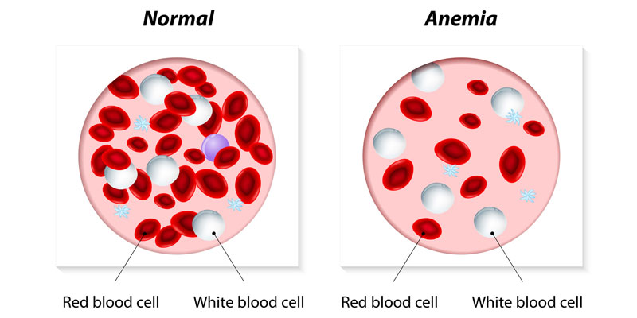
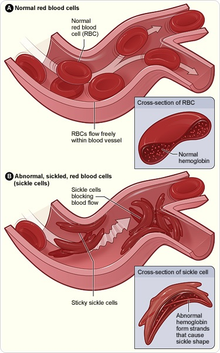

Genetica umană
Anemia falciformă
Anemia falciformă, siclemia sau drepanocitoza, este o maladie ereditară autozomal recesivă, caracterizată printr-o formă anormală a hematiilor, acestea având o formă de seceră (sickle), în loc de formă de disc biconcav. Această formă scade flexibilitatea hematiilor, rezultând astfel un risc crescut de complicații.


Forma eritrocitelor este datorată unei mutații în gena hemoglobinei. Speranța de viață pentru indivizii bolnavi este mai mică. În 1994, în SUA, speranța medie de viață a persoanelor cu această maladie a fost în jur de 42 de ani la bărbați, și 48 de ani la femei, dar astăzi, datorită unei gestionări mai bune a bolii, pacienții pot trăi până la 50 de ani sau mai mult. În Marea Britanie, speranța de viață este estimată la 53-60 de ani.Siclemia apare mai frecvent la persoanele din regiunile tropicale și sub-tropicale, unde malaria este comună. O treime din populația din Africa sub-sahariană prezintă gena, deoarece în zonele în care malaria este des întâlnită, prezența genei este benefică: astfel, oamenii care au doar una din cele două alele ale genei, deși nu devin imuni la malarie, sunt mult mai toleranți la infecție, prezentând simptome mai puțin severe, și având o mortalitate mult mai mică atunci când sunt infectați.